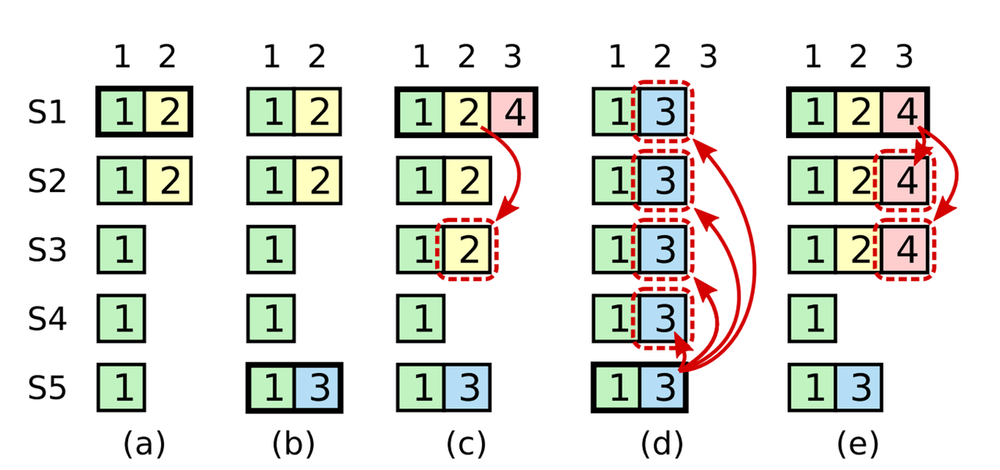

16. Raft PartC 调试和小结
工欲善其事，必先利其器。这次在调试之前，我们首先再加一些之前没有加到位的调试日志。有了这些关键环节的日志，我们就可以追踪日志试探匹配过程中冲突以及后撤的 index 变迁轨迹和当时 Leader、Follower 两方日志构成。有了这些，即使我们一开始实现出错，也可以根据这些信息来修正我们的优化算法。
加些日志
由于大部分时候我们并不需要特别详细的信息，因此我们将这些日志信息大多都加为 Debug 级别，可以通过设置 VERBOSE = 0 来打印，VERBOSE = 1 来关闭对 Debug 日志的打印。
RPC 收发信息
每个 RPC 发送出去、收到的时候，都可以打印下关键参数信息。为了复用，我们可以给 RPC 用到的 XXXArgs 各自构造一个 format 好的 String() 函数。且尽量的简洁的打印信息。
领导选举模块收发信息：
1 | func (args *RequestVoteArgs) String() string { |
注：可以看出接收方只打印了 Args 相关信息，这是因为 Reply 信息在已经在各种处理路径中都打印了。
日志复制模块收发信息：
1 | func (args *AppendEntriesArgs) String() string { |
试探阶段信息
包括发送方的试探信息（nextIndex 轨迹）、接收方的冲突信息（conflictTerm 和 conflictIndex 信息），以及两方当时的 Log 信息。
为了方便复用格式化日志的代码，我们给他封装个函数。我们以 [startIndex, endIndex]TXX 形式来按 term 粒度压缩日志信息。也就是简单按 term 归并了下同类项，否则日志信息会过于长，不易阅读。
1 | // --- in raft.go |
发送方试探信息：
1 | // --- in raft_replication.go |
接收方冲突信息：
1 | func (rf *Raft) AppendEntries(args *AppendEntriesArgs, reply *AppendEntriesReply) { |
调试
在跑整体测试的时候，发现针对 Figure 8 的测试没有通过：
1 | go test -run PartC |
联系论文中相关配图：

可以想到是一个重要的 bug：Leader 只能提交本 Term 的日志。在 raft_replicaton.go 中，将更新 commitIndex 的条件改掉就行：
1 | func (rf *Raft) startReplication(term int) bool { |
然后可以发现 race 测试、高并发测试都可以跑过了：
1 | ➜ raft git:(example) go test -run PartC -race |
检查列表
下面给出一些 PartC 可能有问题的检查列表，如果你的代码有问题，但是调了半天没有调出来，可以参考以下信息。
- 只能提交本 term 日志，不然
TestFigure8PartC过不了。 - 通过当选的 leader 可以及早 truncate 一些 Follower 的日志，以使之后快速收敛。测试了下似乎差别不大。
- 优化：收到 Start 就可以发 RPC，不然得等到下一个心跳间隔才能发；但是也不要发太频繁，不然一下 Start 五十个。
- 注意
reply.ConflictIndex是reply.ConflictTerm的第一项而不是args.PrevTerm的第一项。
 微信
微信